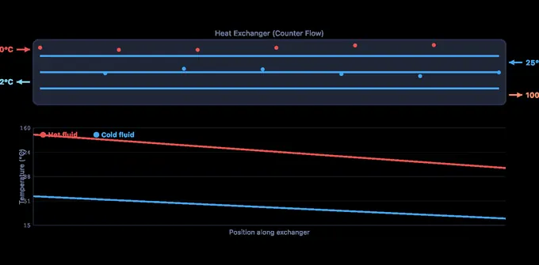
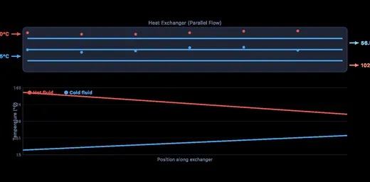

LMTD & NTU Heat Exchanger Calculator
LMTD & NTU Methods • Parallel & Counter Flow • Temperature Profiles
3D Model — Auto AC Elective: Evaporator & Condenser Heat Exchanger
Interactive 3D model of this apparatus. Pick a component on the right, then drag to rotate · scroll to zoom · right-drag to pan.
1 Overview
The Heat Exchanger Simulator lets you design and analyse heat exchangers using both the LMTD (Log Mean Temperature Difference) method and the NTU-effectiveness method. You can switch between parallel flow and counter flow arrangements, select different fluids for the hot and cold sides, and adjust inlet temperatures, mass flow rates, the overall heat transfer coefficient (U-value), and surface area. The canvas displays animated temperature profiles showing how both fluid temperatures change along the exchanger length.
This tool is ideal for mechanical and chemical engineering students studying thermal systems, HVAC engineers sizing heat exchangers, and instructors teaching heat exchanger design methods. The four modes cover simulation, concept exploration, practice problems, and quizzes to provide a complete learning experience on heat exchanger analysis, fouling factor considerations, and effectiveness calculations.
2 Entering the Inputs
The simulator opens in Simulate mode with a counter-flow arrangement, water on both sides, Th,in = 150 °C, Tc,in = 25 °C, mass flow rates of 2.0 and 3.0 kg/s, U = 500 W/m²K, and area = 10 m². The canvas shows the temperature profiles of both fluids along the exchanger length, with the hot fluid cooling and the cold fluid heating.
Start by toggling between Counter Flow and Parallel Flow to see how the flow arrangement affects temperature profiles and effectiveness. In counter flow, the cold outlet can approach (or even exceed in temperature) the hot outlet, which is impossible in parallel flow. Adjust the fluid selectors to choose from Water (Cp = 4.18), Engine Oil (Cp = 2.10), Air (Cp = 1.005), Ethylene Glycol (Cp = 2.42), or Steam (Cp = 2.01). The readout cards display heat transfer rate Q, LMTD, effectiveness, NTU, and both outlet temperatures.
3 Reading the Result
The temperature profile canvas is the centrepiece of Simulate mode. For counter flow, the hot and cold temperature curves run in opposite directions, maintaining a more uniform temperature difference along the length, which produces a higher LMTD and better effectiveness. For parallel flow, both curves converge toward a common temperature, producing diminishing returns as the exchanger gets longer.
Key controls include the inlet temperature sliders for both fluids, mass flow rate sliders, the U-value slider (50–2000 W/m²K), and the area slider (1–100 m²). Try increasing the area from 10 to 50 m² and watch the effectiveness increase as the exchanger captures more of the available heat. The NTU readout (NTU = UA/Cmin) quantifies the exchanger size relative to the heat capacity rate — higher NTU means a larger, more effective exchanger. The LMTD is computed using ΔT1 and ΔT2 with the logarithmic mean formula.
4 The Formulas Behind It
Switch to Explore mode to study concept cards across four categories: Fundamentals, Flow Arrangements, Design Methods, and Applications. Fundamentals covers the heat balance equation Q = ṁcΔT, the overall heat transfer coefficient U, and the concept of thermal resistance in series.
Flow Arrangements compares parallel flow, counter flow, cross flow, and shell-and-tube configurations. Design Methods explains the LMTD method (used when all four temperatures are known) and the NTU-effectiveness method (used when outlet temperatures are unknown). The NTU formulas differ for each flow arrangement, so the cards provide the specific equations for counter flow and parallel flow. Applications covers industrial examples: power plant condensers, HVAC coils, automotive radiators, oil coolers, and pasteurisation equipment, along with the fouling factor concept that reduces effective U over time.
5 Try a Problem
Practice mode generates randomised heat exchanger problems. You might be asked to calculate the LMTD for a counter-flow exchanger, find the required surface area for a given heat duty, determine the NTU and effectiveness, or compute outlet temperatures from given inlet conditions and UA values. Enter your answer and click Check for instant feedback. Your running score tracks your progress across multiple problems.
Quiz mode presents five questions per session covering both conceptual understanding (e.g., why is counter flow more effective than parallel flow?) and numerical calculations (e.g., compute COP or heat rate). After completing the quiz, review your results to identify areas for improvement. This mode is excellent preparation for thermal engineering examinations and HVAC design certification.
6 Engineering Notes
- Always check which method to use: LMTD when all four temperatures are known, NTU when outlet temperatures are unknown and you need to find effectiveness first.
- Counter flow always has higher effectiveness than parallel flow for the same NTU and capacity ratio Cr. Switch between the two flow modes to see this difference visually in the temperature profiles.
- The capacity ratio Cr = Cmin/Cmax ranges from 0 to 1. When Cr = 0 (one fluid undergoes phase change, like condensation), the NTU formula simplifies to ε = 1 − e−NTU.
- Fouling reduces the effective U-value over time. In real design, engineers oversize the exchanger area by 10–25% to account for fouling. Try reducing U in the simulator to see the impact.
- Watch the temperature profiles on the canvas. If the curves are nearly parallel, the LMTD is relatively uniform and the exchanger is well-utilised. If they converge to the same temperature, you are at the thermodynamic limit.
- Combine with the Heat Transfer Modes Simulator to understand the individual mechanisms (conduction, convection, radiation) that determine the overall U-value.
Understanding Heat Exchangers — LMTD and NTU Methods

A heat exchanger is a device that transfers thermal energy between two or more fluids at different temperatures. Heat exchangers are fundamental components in power plants, HVAC systems, chemical processing, automotive radiators, and refrigeration cycles. The two primary analysis methods are the Log Mean Temperature Difference (LMTD) method and the Number of Transfer Units (NTU) method, each suited for different design scenarios.
The basic heat exchange equation is Q = U × A × ΔTlm, where U is the overall heat transfer coefficient (W/m²·K), A is the heat transfer surface area (m²), and ΔTlm is the log mean temperature difference. The LMTD accounts for the varying temperature difference along the exchanger length, providing an accurate average driving force for heat transfer. For counter-flow arrangements, ΔT1 = Th,in − Tc,out and ΔT2 = Th,out − Tc,in.
Counter Flow vs Parallel Flow Heat Exchangers
In a parallel-flow (co-current) heat exchanger, both fluids enter at the same end and flow in the same direction. The hot fluid cools and the cold fluid heats, with both temperatures approaching an intermediate value. In a counter-flow heat exchanger, the fluids enter at opposite ends and flow in opposite directions. Counter flow achieves higher thermal effectiveness because the cold outlet can approach the hot inlet temperature. For the same heat duty and temperatures, a counter-flow exchanger requires less surface area than a parallel-flow exchanger, making it the preferred configuration in most industrial applications.

NTU-Effectiveness Method for Heat Exchanger Design
The NTU method is particularly useful when outlet temperatures are unknown. Effectiveness (ε) is defined as the ratio of actual heat transfer to the maximum possible heat transfer: ε = Qactual / Qmax, where Qmax = Cmin(Th,in − Tc,in). The NTU is defined as NTU = UA/Cmin, and the capacity ratio Cr = Cmin/Cmax. For counter flow: ε = (1 − e−NTU(1−Cr)) / (1 − Cr·e−NTU(1−Cr)). Higher NTU values correspond to larger, more effective heat exchangers.
Overall Heat Transfer Coefficient
The overall heat transfer coefficient U combines all thermal resistances in series: 1/U = 1/hi + Rfi + t/k + Rfo + 1/ho, where hi and ho are inside and outside convection coefficients, Rfi and Rfo are fouling resistances, t is wall thickness, and k is wall thermal conductivity. Typical U values range from 150–1500 W/m²K for liquid-to-liquid exchangers and 10–50 W/m²K for gas-to-gas exchangers. Fouling significantly reduces U over time, requiring periodic cleaning or oversizing during design.
Worked Sizing — A 50 kW Liquid-to-Liquid Cooler
Specify a counter-flow shell-and-tube exchanger that cools 1.2 kg/s of hot oil (cp,h = 2.1 kJ/kg·K) from 90 °C to 50 °C using cooling water (cp,c = 4.18 kJ/kg·K) entering at 20 °C and leaving at 35 °C. Take a typical U for oil/water of 350 W/m²·K.
| Step | Working | Result |
|---|---|---|
| Heat duty Q from the hot side | ṁ·cp·ΔT = 1.2 × 2100 × 40 | 100.8 kW |
| Required water flow (energy balance) | Q/(cp,c·ΔTc) = 100800/(4180·15) | 1.61 kg/s |
| Counter-flow ΔT at one end | 90 − 35 | 55 K |
| Counter-flow ΔT at other end | 50 − 20 | 30 K |
| LMTD = (ΔT1 − ΔT2) / ln(ΔT1/ΔT2) | (55 − 30)/ln(55/30) | 41.3 K |
| Required area A = Q / (U·LMTD) | 100800/(350·41.3) | 6.97 m² |
About 7 m² of effective surface — in a standard shell-and-tube configuration with 19 mm OD tubes at 1.5 m length, that is roughly 78 tubes per shell pass. The simulator’s Q and LMTD readouts let you vary U, inlet temperatures, and flow rates to see how design choices ripple through the size.
Counter Flow vs Parallel Flow — Same Inputs, Different Outcomes
Run the same inlet conditions through both flow arrangements in the simulator and compare LMTD — the difference is striking:
| Arrangement | Hot stream | Cold stream | ΔT at end 1 | ΔT at end 2 | LMTD |
|---|---|---|---|---|---|
| Counter flow | 90 → 50 | 35 ← 20 | 55 | 30 | 41.3 K |
| Parallel flow | 90 → 50 | 20 → 35 | 70 | 15 | 35.7 K |
For the same heat duty and U, parallel flow needs 16% more area than counter flow. Worse, parallel flow can never raise the cold outlet above the hot outlet, so applications needing close approach temperatures (refrigeration, cryogenics) must use counter or cross flow. Most industrial exchangers default to counter flow for exactly this reason; parallel flow is reserved for cases where simplicity or temperature uniformity matters more than area.
NTU–Effectiveness Method — When You Do Not Know the Outlet Temperatures
The LMTD method requires all four temperatures up front. In rating problems — “here is an existing exchanger; what will the outlet temperatures be?” — you do not have them. The Number-of-Transfer-Units (NTU) method works directly from geometry:
NTU = U·A / Cmin · Cr = Cmin/Cmax · ε = Q / Qmax
For a counter-flow exchanger, ε = (1 − e−NTU(1−Cr)) / (1 − Cr·e−NTU(1−Cr)). Continuing the previous example: Ch = 1.2·2100 = 2520 W/K; Cc = 1.61·4180 = 6730 W/K; Cmin = 2520, Cr = 0.374, NTU = 350·6.97/2520 = 0.968. Plugging in gives ε ≈ 0.57, exactly matching Q/Qmax = 100.8/(2520·70/1000) = 0.571 ✓. The two methods always agree when the geometry is fixed.
LMTD Correction Factor F — Shell-and-Tube Chart
A shell-and-tube exchanger with more than one tube pass is neither pure counter flow nor pure parallel flow, so the counter-flow LMTD must be corrected:
Q = U · A · F · ΔTlm,counter-flow
Find F from the two dimensionless groups, where T is the shell side and t the tube side:
P = (t₂ − t₁) / (T₁ − t₁) and R = (T₁ − T₂) / (t₂ − t₁)
F for 1 Shell Pass, 2 (or 2n) Tube Passes
| P ↓ / R → | R = 0.2 | R = 0.4 | R = 0.6 | R = 0.8 | R = 1 | R = 1.5 | R = 2 | R = 3 | R = 4 | R = 6 |
|---|---|---|---|---|---|---|---|---|---|---|
| 0.05 | 1.000 | 1.000 | 1.000 | 1.000 | 1.000 | 0.999 | 0.999 | 0.998 | 0.998 | 0.996 |
| 0.10 | 1.000 | 0.999 | 0.999 | 0.998 | 0.998 | 0.997 | 0.995 | 0.992 | 0.988 | 0.972 |
| 0.15 | 0.999 | 0.998 | 0.997 | 0.996 | 0.995 | 0.991 | 0.987 | 0.976 | 0.955 | 0.667 |
| 0.20 | 0.998 | 0.996 | 0.994 | 0.992 | 0.989 | 0.982 | 0.972 | 0.935 | 0.813 | — |
| 0.25 | 0.997 | 0.994 | 0.990 | 0.986 | 0.981 | 0.966 | 0.942 | 0.809 | — | — |
| 0.30 | 0.995 | 0.990 | 0.984 | 0.977 | 0.969 | 0.939 | 0.883 | — | — | — |
| 0.35 | 0.993 | 0.985 | 0.976 | 0.964 | 0.950 | 0.892 | 0.740 | — | — | — |
| 0.40 | 0.990 | 0.979 | 0.964 | 0.945 | 0.921 | 0.803 | — | — | — | — |
| 0.45 | 0.986 | 0.969 | 0.947 | 0.918 | 0.876 | 0.579 | — | — | — | — |
| 0.50 | 0.981 | 0.957 | 0.924 | 0.877 | 0.802 | — | — | — | — | — |
| 0.55 | 0.975 | 0.940 | 0.891 | 0.812 | 0.660 | — | — | — | — | — |
| 0.60 | 0.966 | 0.916 | 0.840 | 0.697 | — | — | — | — | — | — |
| 0.65 | 0.953 | 0.882 | 0.757 | — | — | — | — | — | — | — |
| 0.70 | 0.935 | 0.828 | 0.586 | — | — | — | — | — | — | — |
| 0.75 | 0.909 | 0.735 | — | — | — | — | — | — | — | — |
| 0.80 | 0.865 | — | — | — | — | — | — | — | — | — |
Computed from the Bowman–Mueller–Nagle equation — the same relation the classic F-charts are plotted from — not read off a graph. Cells are blank where the duty is thermodynamically impossible for this arrangement, or where F < 0.5 and the configuration is unusable. Design rule: keep F ≥ 0.75. Below that the curve is so steep that a small error in an inlet temperature swings the required area wildly, and the design becomes unstable — add shell passes or use exchangers in series instead. F = 1 for pure counter flow and for any exchanger where one stream is isothermal (a condenser or evaporator, R = 0).
Typical Overall Heat Transfer Coefficients
| Fluid pairing | U (W/m²·K) |
|---|---|
| Water to water | 850–1700 |
| Water to oil | 110–350 |
| Steam to water (condenser) | 1000–6000 |
| Water to organic solvent | 280–850 |
| Gas to gas | 10–40 |
| Gas to water (air cooler) | 25–60 |
| Steam to oil | 60–340 |
| Refrigerant to water (evaporator) | 300–1000 |
Clean-surface ranges for preliminary sizing; gas-side coefficients dominate the total, which is why gas-to-gas units need so much more area. Apply fouling resistances before finalising — see below.
Fouling — Why Heat Exchangers Lose Capacity
Heat exchangers degrade as deposits build on the tube walls, adding extra thermal resistance Rf. Typical fouling factors from TEMA tables (Tubular Exchanger Manufacturers Association):
| Fluid | Fouling factor Rf (m²·K/W) |
|---|---|
| Distilled / boiler feedwater | 0.0001 |
| Treated cooling-tower water | 0.0002 – 0.0004 |
| River water | 0.0005 – 0.0010 |
| Light hydrocarbons (gasoline) | 0.0002 |
| Heavy oil > 80 °C | 0.0009 |
If our 50 kW cooler runs untreated river water and oil, total Rf ≈ 0.0019 m²·K/W. The new clean U was 350 W/m²·K (1/U = 0.00286 m²·K/W); after fouling, 1/Ufoul = 0.00286 + 0.0019, so U drops to 210 W/m²·K — a 40% loss. Designers oversize the area at specification time so the unit still meets duty when fouled, then clean it before performance falls below the fouled-design point.
Standards and References
- Cengel, Y. A. — Heat and Mass Transfer: Fundamentals and Applications, 6th ed., Chapter 11 (Heat Exchangers).
- Incropera, F. P. — Fundamentals of Heat and Mass Transfer, 7th ed., Chapter 11.
- TEMA — Standards of the Tubular Exchanger Manufacturers Association, 10th ed. Defines the shell/head/tube-pattern designations (BEM, AEU, etc.) used in industrial procurement.
- ASME Section VIII Division 1 — the pressure-vessel code that governs shell and head thicknesses.
- ISO 15547-1:2005 — Plate heat exchangers for general process service.
Explore Related Simulators
If you found this heat exchanger simulator helpful, explore our Heat Transfer Modes Simulator, Thermodynamics Simulator, Fluid Flow Simulator, Thermal Expansion Calculator, and the Rankine Cycle Simulator (steam power plants, where boilers and condensers are heat exchangers) for more hands-on practice.